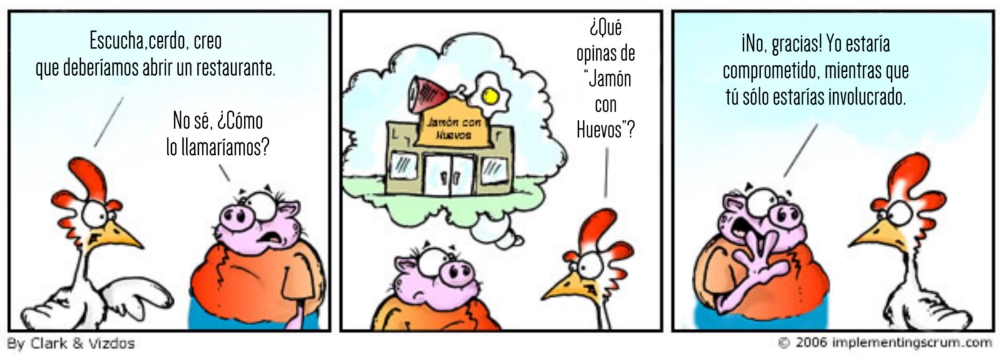

Scrum y GitHub
Pedro Prieto
Introducción
Waterfall
Agile
- Personas por delante de procesos y herramientas
- Software funcional por delante de documentación
- Colaboración con el cliente frente a contrato a priori
- Adaptación al cambio frente a ceñirse al plan
- Equipos auto organizados
- Evaluación y adaptación continuas
Agile no es…

Proyecto Sentinel (FBI)
- Modernización de la infraestructura de información del FBI
- Hasta los atentados del 11S se enviaban faxes o CDs
- No había manera de enviar un correo electrónico de manera segura con fotos de posibles sospechosos
Primer intento - 2001
- 730000 líneas de código
- $170M
- Abandonado en 2005
Segundo intento - 2006
- Presupuesto: $300M
- Coste final: $500M - $600M
- Abandonado en 2010
Adopción de Scrum - 2010
- Presupuesto: $30M
- Plantilla reducida de 400 a 40 personas
- Sistema operativo al cabo de un año
Scrum
Popularidad

Proceso

Roles
- Product Owner
- Equipo de desarrollo
- Scrum Master
Product Owner
- Representa a las partes interesadas (clientes, directivos, otros departamentos)
- Una única persona
- Se encarga de dejar claras las especificaciones y objetivos del producto o proyecto
- Colabora con el equipo de desarrollo (reuniones, etc.)
Equipo de desarrollo
- Desarrollan el producto o proyecto
- Entre 4 y 8 personas
- Auto organizado
- Multidisciplinar
Scrum Master
- Facilitador
- Vela porque se siga el proceso
- Facilita las reuniones
- Elimina impedimentos
- Protege al equipo de injerencias e interrupciones
Roles

Roles

Proceso
Eventos
- Planning meeting
- Sprint
- Daily scrum / standup
- Demo
- Retrospectiva
Planning

Planning

Planning

Planning

Planning

Planning (Poker)

Sprint
- Período de "trabajo"
- Duración fija
- De 2 a 4 semanas (la mayoría)
- Durante el sprint no pueden cambiarse los objetivos definidos (funcionalidades, etc.)
Daily Scrum

Daily Scrum

Daily Scrum

Demo

Demo

Retrospectiva

Proceso
Artefactos
- Product Backlog
- Sprint Backlog
- Scrum Board
- Product increment
- Burn Down Chart
Product Backlog
- Lista ordenada (priorizada) de funcionalidades/características deseadas (stories)
- Visible para todas las partes interesadas
- Cualquiera puede añadir nuevos elementos
- Los elementos de la parte superior están más detallados
- Cada elemento especifica el qué (no el cómo)
- Cada elemento tiene una estimación de dificultad/duración (story points)
Sprint Backlog
- Selección de elementos del product backlog que el equipo considera que puede completar en un sprint
- Se elabora en la sesión de planificación
- Visible para el equipo y referenciado durante el daily scrum
- No se pueden añadir nuevas funcionalidades a implementar una vez que se han fijado (fixed scope)
- Es posible que haya que realizar tareas adicionales no previstas para alcanzar los objetivos definidos
Scrum board

Scrum Board

Scrum board

Product increment
- Cada funcionalidad (story) implementada debe tener valor en sí misma
Burn Down Chart
- Muestra la cantidad de trabajo (medido en story points) que queda por realizar
- Se estima diariamente en la sesión daily scrum
- Facilita la auto-organización
- Para uso del equipo únicamente (no como medida de presión por parte de los gestores)
Burndown chart

GitHub
Características
- Control de versiones (obvio)
- Plataforma más utilizada para proyectos OpenSource
- Colaboración
- Alojamiento web estático gratuito (GitHub Pages)
- Gestión de incidencias (issues)
- Gestión de proyectos (mínima)
- Integración continua
Colaboración: Forks y Pull Requests
- Fork
- Copia de un repositorio para su modificación/mejora/edición
- Pull Request
- Petición para integrar los cambios realizados en el repositorio original
Alojamiento: GitHub Pages

Incidencias: Issues

Milestones

Asignación

Planificación

Proyectos

Integración continua
- Realizar integraciones cada poco tiempo
- Disminuir el riesgo de "integration hell"
- Automatizar el proceso de testeo
- Automatizar el proceso de despliegue de la aplicación
- Disminuir costes
- Realizar entregas frecuentes
Integración continua
GitHub y Scrum
Estrategias
- Organizaciones de GitHub
- Gestión de equipos
- Gestión de repositorios compartidos
- Gestión de permisos
- Repositorios compartidos
- Utilización de ramas
- Ramas personales
- Rama principal de integración
Backlog / issues
- Creación de una "milestone" para hacer referencia a los objetivos del sprint
- Cada "issue" puede hacer referencia a una historia o una tarea
- Las historias que vayan a realizarse en el sprint (sprint backlog) se asignan a la "milestone"
- Pueden utilizarse las etiquetas para indicar la dificultad o duración
- Para indicar que una persona está trabajando en una tarea se asigna a dicha tarea
- Se pueden utilizar los proyectos como "scrum board"
Scrum Board / Proyectos
Estimación de tareas / etiquetas

Daily Scrum
- Cada día se realiza la reunión (entre 5 y 15 minutos)
- Cada persona indica qué tareas ha realizado y cierra los "issues" que tenga pendientes.
- Cada persona indica qué trabajo va a realizar hoy y se asigna los "issues" correspondientes
- Se evalúan los impedimentos que haya
Para mayor integración: ZenHub

Otras herramientas
- Trello
- Jira
- Slack
- …
Otras herramientas

¿Preguntas?
Demo

Gracias por vuestra atención

Ball Point Challenge
- Todos formáis un gran equipo
- Cada pelota tiene que pasar un tiempo en el aire
- No se puede pasar la pelota a la persona que tengáis a izquierda o derecha
- Todos los miembros del equipo deben tocar la pelota
- La pelota debe llegar al mismo punto de donde salió
- Cada iteración = 2 minutos
- Se realiza una estimación antes de cada iteración
- Tiempo de preparación = 2 minutos
- Tras cada iteración, 1 minuto de planificación
- Haremos 5 iteraciones